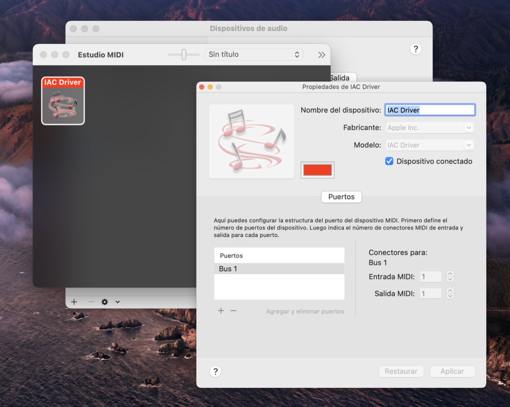
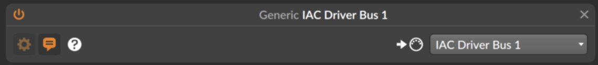
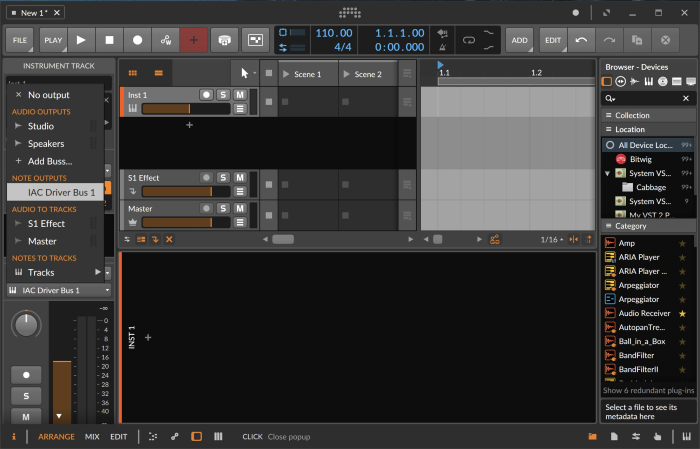
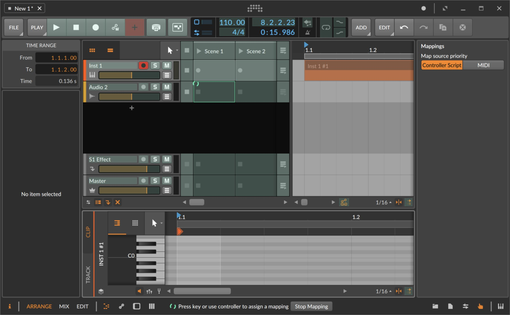
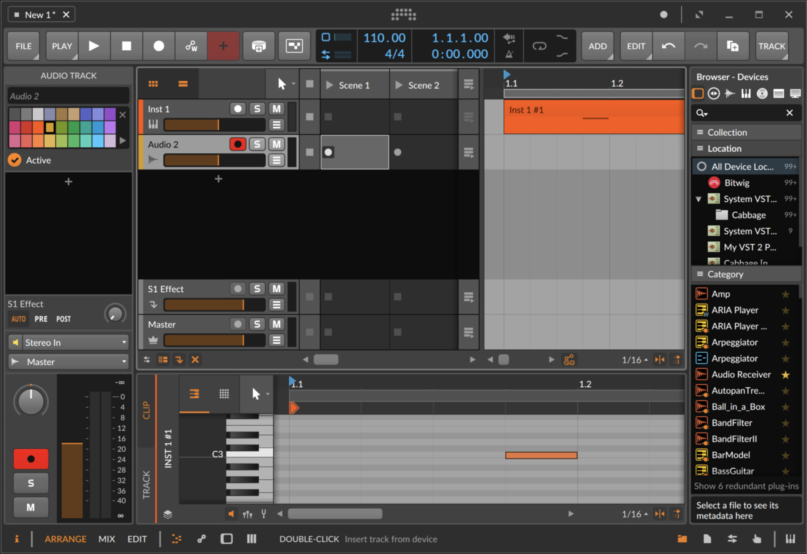

Here's how to get automatic live looping working in Bitwig! (This sort of thing: https://youtu.be/c5FqpddnJmc) I couldn't find any guides online, so hopefully this can be helpful!
The core idea is to use Bitwig's mapping functionality to use data from a midi track to trigger loops. A virtual midi bus is used so that the output from the track can be treated as a controller.
(1) Set up virtual MIDI bus
On macOS, open the "Audio Midi Setup" app. Open MIDI studio with cmd-2. Double click on IAC Driver and make sure it is enabled.
I am not certain how to do this on Windows, but I've heard loopMIDI reccomended: https://www.tobias-erichsen.de/software/loopmidi.html
(2) Add the virtual midi bus as a controller
Create a generic midi keyboard controller and assign it to the virtual midi bus. I reccomend naming it so that it's easier to find later.
(3) Set up track which triggers looping
Create an instrument track and set the output to the virtual midi bus.
(4) Create a track to control
Straightforward, just create a new track as you would normally. I'm going to use an audio track, but it works with midi and hybrid tracks as well!
(5) Create the mappings!
For this step, make sure both the arranger timeline and the clip launcher are visible. Show the mappings browser panel, then click on a slot in the clip launcher for the track you want to control. Then, create a clip in the arranger for the trigger track, open the midi editor and on the keyboard on the left click the note you want to use as a mapping. This note is now mapped to controlling that clip launcher slot! I reccomend repeating this step for the "Stop clip" slot as well, and for each slot you want to have control over.
(6) Program the triggers
On the trigger track, place midi notes right before where you want the clip launcher to be triggered (because this method simulates using the clip launcher manually, it respects launch quantization). e.g. If you mapped C3 to start recording a clip, and you want to start recording on measure 2, place a C3 midi note on the last beat of measure 1. Now, playing back the track from the beginning will start recording a loop on measure 2! You can add more trigger notes as desired, for anything you have mapped.
That's it!
You can use this method to automatically control anything that can be mapped in Bitwig. It also works nicely with pre-recorded tracks as you can simply drop those in the arranger where you'd like. Also good to know is you can do this for as many tracks as you'd like, and if 128 midi notes isn't enough to control everything you want to do, you can add another virtual midi bus and track. Besides clip triggering, this method could be useful for:arming/disarming tracks if you want to record to different tracks at different times in an arrangement, for e.g. different virtual instruments or effects.
Please feel free to reach out if there are any questions or if anything here is poorly explained! My contact information is on the homepage of this website.
updated 2022-04-22